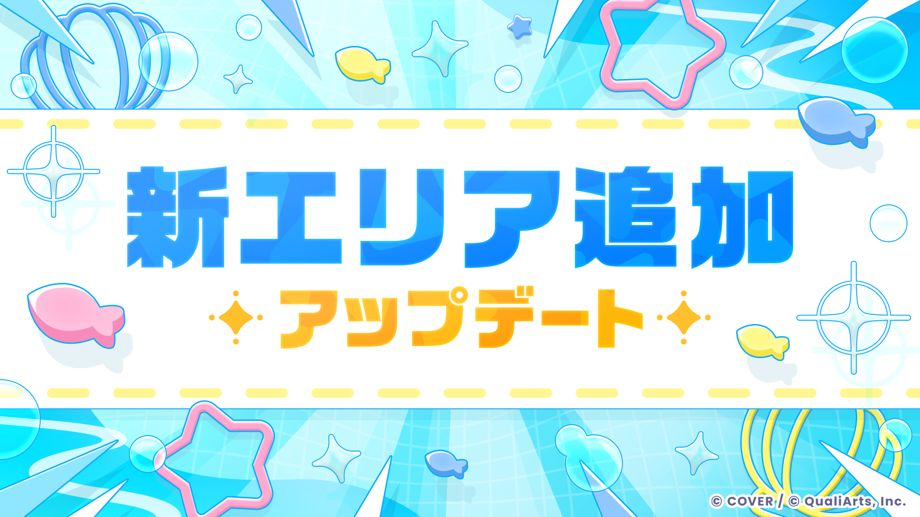
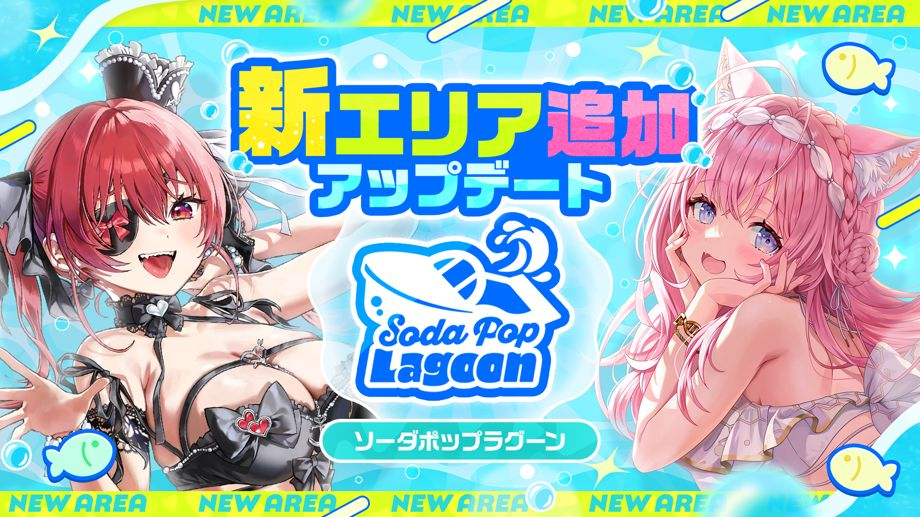
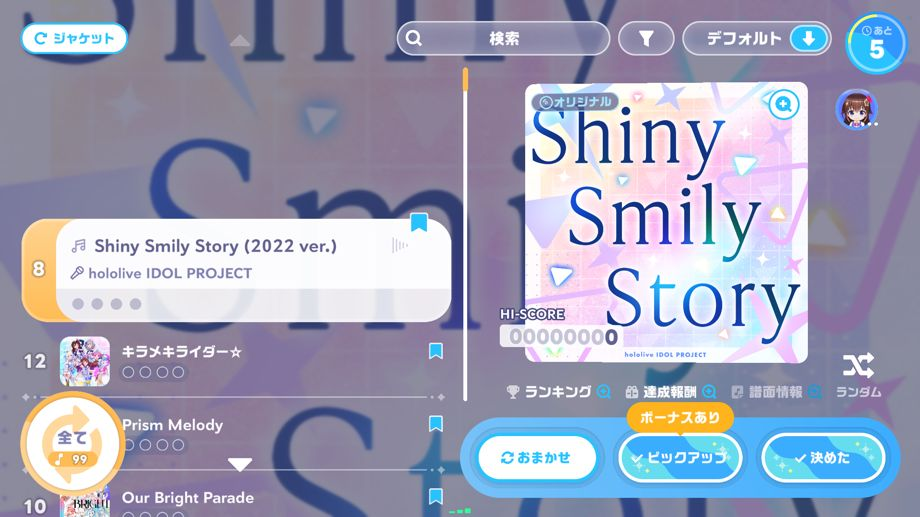

ご利用いただきありがとうございます。
「ホロライブドリームス」運営チームです。
2026-09-29 11:00:00に、Ver.1.2.0アップデートを行いました。
新エリア「ソーダポップラグーン」登場！

2026-09-29 11:00:00より、新エリア「ソーダポップラグーン」登場！
ソーダポップラグーンは、広大な海と島々によって構成された新エリアです。
また、新エリア「ソーダポップラグーン」の登場に合わせて、新機能「さかな釣り」や新ミニゲーム「スプラッシュボール」も追加されております。
詳細は［お知らせ］→［一覧］→［新エリア「ソーダポップラグーン」登場！］をご覧ください。
その他アップデート
◆ピックアップ選曲

楽曲選択の際に「ピックアップ選曲」を選ぶことで、イベント課題曲や登場タレントの楽曲を中心に自動選曲されます。
この機能で選出された楽曲には曲長ボーナスの代わりに、楽曲による差がなく、曲長ボーナスと同等以上の「ピックアップボーナス」が適用されます。
※「ピックアップ選曲」は、みんなでライブの「グレードモード」「プライベート」でのみ適用されます。
◆ライブの改善・アップデート
- 隣り合うノーツの視認性の改善をしました。
- 特定の条件下において、ノーツの巻き込みが発生する現象を改善しました。
- 短いロングノーツの判定を改善しました。
- 特定の条件下におけるロングノーツの始点の判定を改善しました。
- 特定の条件下において、最大コンボ数が変動してしまう現象を改善しました。
- クリエイト譜面を選択時のフィルターで「お邪魔なし」「多本指なし」の絞り込みができるようになりました。
- 譜面情報の解放条件を、公式譜面はその譜面をプレイすると、クリエイト譜面は条件なしで解放されるように変更しました。
- ライブリザルトや譜面情報画面で、スクリーンショットを保存することができるようになりました。
- 楽曲選択画面にて、元々カーソルがあたっていた楽曲が絞り込み条件から除外された際に、カーソルが最上部に戻ってしまう現象を改善しました。
- リズムゲームを一時停止後、「ライブに戻る」を選択した際のカウントダウン中でも一時停止ボタンを押せるように改善しました。
- 特定の条件下において、みんなでライブをプレイ時に「AUTO含む」にチェックを入れているにも関わらずオートプレイができなくなる問題を改善しました。
◆ライブオプションの改善
リズムゲームで使用するライブオプションに下記の項目を追加いたしました。
- 「ペンライトカラー」
hololive fes. 等で実際に使用されているペンライトカラーを選ぶことができます。 - 「表示判定」
設定した判定以下の判定文字のみを表示するように設定することができます。 - 「FAST/SLOWの表示位置」
FAST/SLOWを判定表示の上部と下部のどちらに表示するかを設定することができます。 - 「判定表示位置」
判定表示位置を100段階で上下に移動できます。 - 「判定表示タイプ」
判定をレーン中央に固定表示するか、判定が行われたレーンに対応した位置に表示するかを設定できます。 - 「低ライフ時のアラート演出」
低ライフ時のアラート演出をON/OFF設定できます。 - 「SPスキルタイミング」
これまで通りラインで表示するか、アイコンによって表示するかを設定できます。 - 「レーン幅」
レーンの横幅を設定できます。 - 「レーン分割数」
表示されるレーンの分割ライン数を設定できます。 - 「ノーツの横幅」
ノーツの横幅を設定できます。 - 「ノーツの縦幅」
ノーツの縦幅を設定できます。
また、リズムゲームで使用するライブオプションの下記項目を変更いたしました。
- 「ノーツ表示時間」
ライブオプションで表示されるノーツ表示時間について、下部カットより判定ラインが上にある場合、ノーツが出現してから判定ラインまでの到達時間を算出するように変更しました。
◆クリエイト譜面機能の改善
- 制作したクリエイト譜面について、推定難易度を大きく下回る難易度の設定ができないよう変更しました。
- クリエイト譜面制作画面の拡大率を、最大100倍まで設定できるように変更しました。
- 特定の譜面を参考にして編集する際に、動作が重くなる問題を改善しました。
- 保存した譜面を再編集する際、特定の条件下でロングノーツやデコレーションノーツが意図しない配置になる問題を改善しました。
◆ミニゲーム「ポカジャン！」の調整
「ポカジャン！」において、「意図的に切断を行うことでプレイ実績を調整することができてしまう」問題が確認されたため、以下の調整を実施しました。
- 「ポカジャン！」のプレイ中に切断した場合、そのプレイの対戦結果が、通算コインに反映されます。
また、本調整に伴い、「ポカジャン！」の通算コイン及びランキングのリセットを実施しました。
詳細は、お知らせ「「ポカジャン！」の今後の仕様変更に関するお知らせ」をご確認ください。
◆撮影機能のアップデート
- グリッド表示用のボタンを追加しました。
- 障害物と接触した時のカメラの挙動を調整しました。
◆イベントの改善・アップデート
- イベント開催期間終了後、イベントトップから結果発表予定日時を確認できるようになりました。
- イベントのランキング結果表示中に、タップしなければ次の画面へ進まないように変更しました。
◆その他アップデート
- 「メガサーキット」において、プレイ状況に応じたマッチングの仕組みを調整しました。
- アカウント連携画面において、ユーザーIDをデフォルト非表示にし、表示/非表示を切り替えられるようになりました。
- マルチプレイにおいてシークレットモードを使用しているプレイヤーも通報できるようになりました
◆不具合修正
- 各種ミニゲームの軽微な不具合修正をおこないました。
- その他軽微な不具合の修正をおこないました。